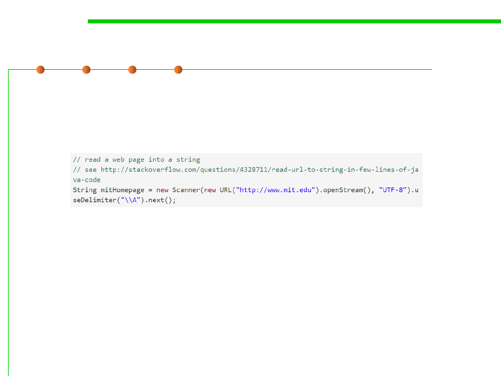

9.2 Refactoring Techniques and Tool Support
Comments Where Needed
▪ Another crucial comment is one that specifies the provenance or
source of a piece of code that was copied or adapted from
elsewhere. This is vitally important for practicing software
developers.
▪ One reason for documenting sources is to avoid violations of
copyright.
– Small snippets of code on Stack Overflow are typically in the public
domain, but code copied from other sources may be proprietary or
covered by other kinds of open source licenses, which are more restrictive.
▪ Another reason for documenting sources is that the code can fall
out of date; the Stack Overflow answer from which this code came
has evolved significantly in the years since it was first answered.